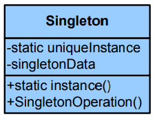
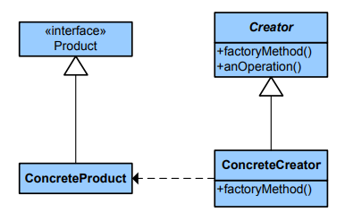

3.2. Patrones de creación#
Los patrones de creación son un conjunto de patrones de diseño en ingeniería de software que se centran en la creación de objetos de manera flexible y eficiente. Estos patrones proporcionan soluciones generales para problemas relacionados con la creación de objetos, como la creación de objetos complejos, la gestión de sus ciclos de vida y la ocultación de los detalles de creación.
3.2.1. Singleton#
El patrón Singleton garantiza que una clase solo tenga una instancia y proporciona un punto de acceso global a esa instancia. Es útil cuando solo se requiere una instancia de una clase para gestionar recursos compartidos.

class Singleton:
_instance = None
def __new__(cls):
if not cls._instance:
cls._instance = super().__new__(cls)
return cls._instance
# Uso del Singleton
s1 = Singleton()
s2 = Singleton()
print(s1 is s2) # Salida: True
True
En esta implementación:
El método
__new__()se utiliza para crear una nueva instancia de la clase.Se utiliza una variable de clase
_instancepara almacenar la única instancia de la clase.Cuando se crea una nueva instancia, se verifica si
_instanceya está configurado. Si no está configurado, se crea una nueva instancia y se almacena en_instance. Si ya está configurado, se devuelve la instancia existente.Como resultado, cualquier intento de crear una nueva instancia de la clase Singleton siempre devolverá la misma instancia.
3.2.2. Prototype#
El patrón Prototype se utiliza para crear nuevos objetos copiando un prototipo existente en lugar de crear un objeto desde cero. Esto es útil cuando la creación de un objeto es costosa en términos de recursos o tiempo.

import copy
class Prototype:
def __init__(self):
self._objects = {}
def register_object(self, name, obj):
self._objects[name] = obj
def unregister_object(self, name):
del self._objects[name]
def clone(self, name, **attrs):
obj = copy.deepcopy(self._objects.get(name))
obj.__dict__.update(attrs)
return obj
class Car:
def __init__(self):
self.make = "Generic"
self.model = "Car"
def __str__(self):
return f"{self.make} {self.model}"
# Uso del patrón Prototype
car_prototype = Car()
prototype = Prototype()
prototype.register_object("car", car_prototype)
car = prototype.clone("car")
print(car) # Salida: Generic Car
Generic Car
car.make = "Ford"
print(car) # Salida: Ford Car
Ford Car
car2 = prototype.clone("car", make="Toyota")
print(car2) # Salida: Toyota Car
Generic Car
Ford Car
Toyota Car
En este ejemplo:
Prototypees una clase que mantiene un diccionario de objetos prototipo registrados.register_object()se utiliza para registrar un objeto prototipo con un nombre asociado.unregister_object()se utiliza para eliminar un objeto prototipo registrado.clone()se utiliza para clonar un objeto prototipo. Se realiza una copia profunda del objeto y luego se actualizan los atributos especificados.Cares una clase simple que representa un coche con atributosmakeymodel.Se crea un objeto prototipo
car_prototypede la claseCar, se registra en el prototipo y se clonan instancias a partir de este prototipo. Se puede personalizar cada instancia clonada actualizando sus atributos según sea necesario.
3.2.3. Factory Method#
El patrón Factory Method es un patrón de diseño creacional que proporciona una interfaz para crear objetos en una clase base, pero permite a las subclases alterar el tipo de objetos que se crean.

from abc import ABC, abstractmethod
# Clase base para productos
class Product(ABC):
@abstractmethod
def operation(self) -> str:
pass
# Implementaciones concretas de productos
class ConcreteProduct1(Product):
def operation(self) -> str:
return "Operation of ConcreteProduct1"
class ConcreteProduct2(Product):
def operation(self) -> str:
return "Operation of ConcreteProduct2"
# Clase base para la fábrica
class Creator(ABC):
@abstractmethod
def factory_method(self) -> Product:
pass
def some_operation(self) -> str:
product = self.factory_method()
result = f"Creator: {product.operation()}"
return result
# Implementaciones concretas de fábricas
class ConcreteCreator1(Creator):
def factory_method(self) -> Product:
return ConcreteProduct1()
class ConcreteCreator2(Creator):
def factory_method(self) -> Product:
return ConcreteProduct2()
# Uso del patrón Factory Method
if __name__ == "__main__":
creator = ConcreteCreator1()
print(creator.some_operation())
creator = ConcreteCreator2()
print(creator.some_operation())
Creator: Operation of ConcreteProduct1
Creator: Operation of ConcreteProduct2
En este ejemplo:
Productes una clase abstracta que define la interfaz para los objetos que la fábrica va a producir.ConcreteProduct1yConcreteProduct2son implementaciones concretas deProduct.Creatores una clase abstracta que declara el método de fábrica (factory_method) que las subclases deben implementar para crear objetos.ConcreteCreator1yConcreteCreator2son implementaciones concretas deCreatorque proporcionan implementaciones específicas del método de fábrica para crear diferentes tipos de productos.Al llamar al método
some_operation()de una instancia deCreator, se crea un producto utilizando el método de fábrica correspondiente y se realiza alguna operación con él.
3.2.4. Otros patrones#
Abstract Factory:
El patrón Abstract Factory proporciona una interfaz para crear familias de objetos relacionados o dependientes sin especificar sus clases concretas. Es útil cuando se desea encapsular la creación de un conjunto de objetos relacionados.
Builder:
El patrón Builder separa la construcción de un objeto complejo de su representación y permite la creación de diferentes tipos y representaciones de un objeto utilizando el mismo proceso de construcción.
Object Pool:
El patrón Object Pool administra un conjunto de objetos reutilizables en lugar de crear y destruir objetos nuevos cada vez que se necesitan. Es útil cuando la creación y destrucción de objetos es costosa y se requiere un acceso eficiente a ellos.